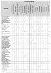

It is increasingly recommended that companies innovate using external resources (Pisano and Verganti 2008: 1). Knowledge sharing is a social activity that occurs within a system where knowledge represents a valuable resource (Davenport and Prusak 1998; Fulk et al. 2004). Knowledge generation, use, application and exploitation can occur within organizations at the individual, team and unit level and outside the organization's boundaries (Davenport and Prusak 1998, De Toni et et al. 2011).
Focusing on knowledge-sharing for innovation, the open innovation paradigm (Chesbrough 2003) assumes that firms can use internal and external ideas and internal and external paths to markets and identifies that the processes of innovation increasingly involve a multitude of networks of knowledge-driven organizations. These can be industrial clusters (Scheel 2002; Hutchings and Weir 2006; Brette and Chappoz 2007), science and technology parks (Monck 1988), knowledge marketplaces (Warkentin et al. 2001; Geragthy and Desouza 2005; Bush and Tiwana 2005; Kafentzis et al. 2005; Al-Shammari 2008), communities of practice (Lave and Wenger 1998; Chesbrough 2003), and R&D consortia (Aldrich 1995).
Traditional practices to enable knowledge sharing are training sessions, workshops, seminars, consulting, research and development activities, university courses, conferences, trade shows, government extension programmes and consortia. However, the World Wide Web has created new forms of enablers for collaborative innovation networks.
More and more companies recognize the potential of using their communities of customers, employees, partners and other interested parties as a source of information and innovation. open innovation (Web-based) platforms (hereafter platforms) can be a means for companies to accelerate the innovation process. For example, they can help client companies to find solutions and/or create communities that contribute to ideas and new products or services. In such platforms, the different parties contribute to and collaborate on ideas, propose new concepts and trends, present solutions to win contests and to answer companies' needs. When used by a firm, the platform can be based on contributions from:
Thus, these platforms enable collective innovation (that is, open and collaborative innovation). The Web has changed how knowledge is created and shared, offering global accessibility and communication with low cost. Consequently, online communities and the platforms (Dodgson et al. 2006; Huston and Sakkab 2006) represent a new approach to opening up company innovation processes (Jeppesen and Frederiksen 2006; Fleming and Waguespack 2007; De Toni et al. 2012). Recently, a large number of new innovative enterprises faced competitive markets by promoting innovation in products and services through platforms that offer free services and open hardware design and allow the collaboration of individuals and companies through so-called crowdsourcing (Howe 2006). Traditional companies have also tried to foster their competitiveness and innovation potential by using platforms and new collaborative approaches, such as co-design, collective intelligence (Brown and Lauder 2000), smart mobs (Rheingold 2002), lead-users innovation (Von Hippel 2005) and open-source communities (Tapscott and Williams 2006).
The platforms are the nexus for the aggregation and integration of different members (individuals and companies) in an innovation community, permitting access to a large pool of experts and contributors, benefiting from proximity to customers and user innovations and avoiding a local search bias in innovation (Füller et al. 2006; von Krogh and von Hippel 2006).
New knowledge is often created and shared through interaction with the environment, as well as through social and collaborative processes (Alavi and Leidner 2001; Bhatt 2001; Battistella et al. 2012). It is important, then, to consider the motivations of individuals and companies to engage in knowledge-sharing and also the conditions and environments (motivational drivers) that facilitate and drive it. The economics and dynamics of the cooperative systems for innovation are critical and, although literature and empirical examples support us through an analysis of individuals' motivations, the research related to companies' motivations is still a big challenge. Moreover, while recent literature has begun to discuss the motivations for participation and knowledge sharing in platforms, it does not support us from a motivational drivers' point of view: the research identified the motivations but not the strategies (drivers) to push them. Finally, current research has explored very few of the drivers for open innovation and/or collective innovation, especially in a context where there is little, or uncertain, monetary return for the innovative efforts.
Consequently, a key issue is the identification of the most successful drivers for motivations that could encourage users (both individuals and companies) to share their knowledge, play an active role and collaborate in the platform. The objective of the research has been to understand how to stimulate the users' participation and active, reactive and proactive knowledge-sharing inside open innovation platforms for the company-centred crowdsourcing in the innovation process for new product or service development.
The first phase of our research has been to deepen the theoretical background on motivation for participation in the collective innovation process, grounded in the psychological and sociological literature. This permitted us to build the research framework that has been used for an in-depth qualitative analysis of twenty platforms. The main aim has been to further develop the state-of-the-art of motivational drivers for stimulating users' participation and collaboration and to evaluate their impact. The paper then proposes the results of the comparative analysis of the drivers and the impact of these drivers on motivations. Finally, these practices are synthesized in a framework useful for the analysis and discussion of the study's academic and managerial implications.
This section summarizes the conceptual basis of the motivations for participation in the collective innovation process. We categorize the main (intrinsic and extrinsic) motivations for collaboration proposed in papers and in the most recent literature reviews (see Von Krogh et al. 2008; Antikainen et al. 2010; Antikainen and Vaataja, 2010). This is used to build the research framework used in the analysis of the twenty open innovation platforms.
'To be motivated means to be moved to do something' (Ryan and Deci 2000: 54). Different people are motivated by different factors, which can be categorised into different groups or types of motivation. Self-determination theory (Deci and Ryan 1980; 1985) distinguishes different types of motivations based on different reasons or goals that lead to action. The main distinction is between intrinsic motivations (which refer to actions based on personal interest and pleasure) and extrinsic motivations (which concern actions that lead to a separable result).
The intrinsic motivations are defined on the bais of satisfaction in the activity itself rather than external pressures or rewards (Deci and Ryan 2000). So, intrinsically motivated behaviour is seen as the more spontaneous and self-interested. Intrinsic motivation can be separated into two dimensions: (1) the individual or enjoyment-based intrinsic motivation and (2) the social, or obligation or community-based intrinsic motivation (Lindenberg 2001; Lakhani and Wolf 2005; Von Krogh et al. 2008).
Literature describes extrinsic motivation as when an activity is performed to achieve some separable results or consequences (Deci and Ryan 1985), such as tangible or verbal rewards (Deci and Ryan 1980). An incentive is any (financial or non-financial) stimulus coming from the external environment, which affects the individuals' motivational processes, satisfying their need and then pushing them to a particular course of action, or counts as a reason for preferring one choice to the alternatives. Leimeister et al. (2009) argue that extrinsic motivations are triggered by incentives such as monetary rewards (direct or indirect) or awards. According to this research, incentives are seen as potential to win a prize ascribable to extrinsic motivations. Thus, the close link between incentives and extrinsic motivations is evident; in literature, the incentives are broken down into two broad categories: tangible and intangible rewards (Roberts et al. 2006). Tangible rewards are material rewards such as money, products and software tools, while intangible rewards include moral reward (for doing the right thing), social contacts and symbolic rewards. The motivational drivers linked to extrinsic motivation are prizes, not necessarily cash-based. The use of the word reward for incentives and prize for extrinsic motivation highlights the fact that incentives are a means used by those who propose collaboration to urge those who must choose to cooperate; the goal of incentives is to generate in the potential contributors some extrinsic motivations that, added to the intrinsic ones, should lead to cooperation.
Bonaccorsi and Rossi (2006) distinguished between economic (tangible), social and technological (professional) motivations. Von Krogh et al. (2008) suggest that economic motivation is similar to extrinsic motivation, and social motivation is close to intrinsic motivation. However, the authors also suggest that the third type of motivation, technological, includes benefits from learning and working with a bleeding-edge technology.
Summarizing the concepts described above we therefore propose the following framework of motivations for participation in the collective innovation process:
1) Intrinsic motivations
2) Extrinsic motivations
In particular:
This list shows a categorization of motivation for collective innovation proposed in literature under our proposed framework. We built it starting from the literature review proposed by Von Krogh et al. (2008), Antikainen et al. (2010) and Antikainen and Vaataja (2010) which are based on other studies about motivations in open source development (Hars and Ou 2002; Hertel et al. 2003; Lakhani and Von Hippel 2003; Hemetsberger 2004; Lakhani and Wolf 2005; Roberts at al. 2006; Nov 2007). Moreover we added two individual intrinsic motivations (the entrepreneurial mindset and the opportunity to express personal creativity), which were not present in the three previous cited classifications but are present in the literature that discusses single motivations (in particular, Tapscott and Williams 2006; Amabile et al. 1994; Ryan and Deci 2000). Finally, we modified the name ideology to social responsibility.
The entrepreneurial mindset is a natural propensity of some individuals. A first fundamental aspect to motivate these possible contributors is to cultivate their entrepreneurial mindset. One of the proposed benefits of open innovation platforms is that they can stimulate entrepreneurship and the intention to share knowledge and ideas (Tapscott and Williams 2006).
As regards opportunity to express individual creativity, intrinsic motivation is the key ingredient to help spark creativity (Amabile 1998). Intrinsic motivations come from inside a person and are factors like passion and self-interest. The opportunity to express personal creativity motivates individuals in the accomplishment of complex tasks (Amabile et al. 1994, 1996) and engages them in their work for the challenge and enjoyment (Amabile et al. 1986).
Another social motivation can be ideology (Stallman 1999; Stewart and Gosain 2006). Nevertheless because of the business nature of open innovation platforms, we decided not toconsider ideology as defined by open source communities (e.g., the ideology could be the belief in software freedom as in the case of Linux vesrsus Microsoft) and in non-profit, open innovation platforms such as Wikipedia(e.g., 'I think information should be free' (Nov 2007)). Furthermore, as stated by Martin (2000, 2002), individuals can be pushed by moral concerns such as:
Literature has focused on understanding the motivations for knowledge-related communication within organizations (e.g., Osterloh and Frey 2000; Bunderson and Sutcliffe 2002; Argote et al. 2003; Wittenbaum et al. 2004; Siemsen et al. 2008; Barachini 2009; Kaiser et al. 2010) and the drivers that lead people to actively engage in it (e.g., Szulanski 1996; Reagans and McEvily 2003; Bock et al. 2005; Kankanhalli et al. 2005; Bordia et al. 2006; Quigley et al. 2007). Several enhancers and barriers for knowledge sharing have also been discussed from an inter-organizational point of view (e.g., Davenport et al. 1998; Davenport and Prusak 1998; Brown and Duguid 2000; McDermott and O'Dell 2001; Dyer and Nobeoka 2000; Battistella and Nonino 2012).
Research on motivations has emphasized the importance of creating a favourable environment in order to elicit motivations. This line of research is full of contributions from a psychological point of view: for example the motivation for learning is curiosity, this is stimulated by the ability of the professor in not only giving concepts but also in storytelling, or it can be stimulated by a classroom full of cartoon posters on the walls. The ability of the learner is a motivational driver, as is the classroom full of cartoons. In a general definition, the motivational drivers are environmental stimuli (objects, people's behaviours, events) pulling people's motivations. In our case, the environment is the platform, therefore the motivational drivers are the design characteristics of the platforms (objects) and the managerial actions that the community manager can do inside the platform (people's activities) with the aim to enhance motivation.
The drivers that push collaboration and knowledge sharing inside platforms can be different from those discussed by the authors above. This is because the motivations themselves are different (for instance, some of the motivations are specific to an online context) and in the same way the drivers can be particular for knowledge sharing in an online context or for users motivated by the sense of community inspired by products or services such as Linux or Wikipedia.
Some works (e.g., Hemetsberger 2002; Roberts et al. 2006; Antikainen et al. 2010; Antikainen and Vaataja 2010) try to explain the motivations that drive people to share their knowledge and to engage in collaborative innovation inside communities of practice. However, knowledge remains incomplete on motivational drivers: how can a platform be designed in order to drive the right motivations?
Our research aims to investigate the drivers that should be implemented inside a platform to push motivations and foster a collective innovation process. Scholars have previously studied motivations and their impact on participation without discussing platforms' drivers that stimulate users' contribution and collaboration.
The purpose of the research is to identify the drivers that can develop and increase the motivations which encourage potential contributors to collaborate in platforms. Therefore, our research focused on the identification of the different drivers used inside platforms to promote innovation and on the study of how to design a system of incentives referring to this peculiar innovation process. Consequently we aimed to answer to the following research question: Which motivational drivers can impact on motivations in open innovation platforms?
The paper is a qualitative, empirical case study and Delphi analysis of the positioning of open innovation Web-based platforms. We decided to use case study research as an overall methodological approach for our empirical investigation. As suggested by a number of scholars, this is a very powerful method for building a rich understanding of complex phenomena (Eisenhardt and Graebner 2007) that requires the capability to answer 'how' and 'why' questions (Yin 2003). The qualitative methodology enables a contextual analysis of a number of events and situations and possible relationships that exist between them. In particular, we used a multiple case study approach because they typically yield more robust, generalizable and testable interpretations of a phenomenon than single case study research (Eisenhardt and Graebner 2007). Given the complexity of the research aim and the need for an explorative approach, we considered that too small a sample would not give us a complete variety of possible drivers, while too big a sample would not give the right depth of analysis.
The empirical setting of this study is a set of twenty open innovation platforms, deemed particularly relevant for the purposes of the study among a list of platforms. Here, every platform is seen as a case. For each platform we investigated the motivations and the motivational drivers and then conducted cross-case analysis to consider their influence.
We chose a differentiated sample in terms of the ultimate objective of the platforms, seniority and the Alexa ranking (an indicator that measures the performance of a Website in terms of popularity based on a set of indexes such as participation, number of users, sites linking in and linking out, etc.), in order to have a larger and comprehensive sample. Table 1 depicts the different platforms considered with their classification in terms of seniority and popularity of the site.
| No. | Platform name | Website | Seniority | Popularity (Alexa rank) |
|---|---|---|---|---|
| 1 | crowdSPRING | http://www.crowdspring.com/ | 2008 | 8.974 |
| 2 | Quirky | http://www.quirky.com/ | 2008 | 33.545 |
| 3 | Shapeways | http://www.shapeways.com/ | 2008 | 56.294 |
| 4 | Guerra Creativa (choosa) | http://www.choosa.net/ | 2009 | 67.591 |
| 5 | clickworker | http://www.clickworker.com/ | 2005 | 72.869 |
| 6 | Ponoko | http://www.ponoko.com/ | 2007 | 84.666 |
| 7 | IdeaConnection | http://www.ideaconnection.com/ | 2007 | 87.481 |
| 8 | Innocentive | http://www.innocentive.com/ | 2001 | 87.638 |
| 9 | THINGIVERSE | http://www.thingiverse.com/ | 2008 | 90.999 |
| 10 | Enterprise Spigit | http://www.spigit.com/ | 2006 | 138.555 |
| 11 | Idea Bounty | http://www.ideabounty.com/ | 2006 | 149.199 |
| 12 | Presans | http://www.presans.com/ | 2007 | 209.091 |
| 13 | WhyNot? | http://www.whynot.net/ | 2005 | 241.459 |
| 14 | NineSigma | http://www.ninesigma.com | 2000 | 317.370 |
| 15 | redesignme | http://www.redesignme.com/ | 2007 | 512.983 |
| 16 | Innovation Exchange | http://www.innovationexchange.com/ | 2008 | 650.994 |
| 17 | Hypios | https://www.hypios.com/ | 2008 | 1.035.496 |
| 18 | ideawicket.com | http://www.ideawicket.com/ | 2006 | 1.090.774 |
| 19 | Innoget | http://www.innoget.com/ | 2009 | 1.302.660 |
| 20 | Big Idea Group | http://www.bigideagroup.net/ | 2008 | 1.522.621 |
Our empirical inquiry investigated the phenomenon in-depth and within its real-life context (Yin 2003): we used both an outsider or user perspective and an insider perspective through primary data (from a Delphi study and interviews) and secondary data (documents, Website explanations, etc.).
We gathered the data about motivations by a questionnaire for the platforms' users. We gathered the data about motivational drivers by observing the characteristics of the platforms (designed by the Website designer) and the actions of the community manager, by interviewing Website designers and community managers and then by confirming the data through a Delphi analysis.
In particular, some revealing elements were considered with the aim of expressing the quality and success (actual or potential) of the site, to identify the drivers on which to lever for a possible improvement and strengthening of motivations. Based on a comprehensive literature review a large number of motivations are listed and then identified in twenty platforms through a thorough analysis and systematization. Then, these platforms have been explored to find the drivers, i.e., the characteristics of the platforms and the managerial actions to enhance these motivations.
Moreover, we explicitly clarified the platform characteristics that determine each motivation. Once we analysed the site and understood how it functioned, its opportunities and its key success factors, we clarified the drivers that impact on discovered motivations, i.e., practical driversor levers that act to increase motivations or structural characteristics on which platforms should be designed and built. The next logical step has been to summarize all the motivations inferred from an analysis of individual sites and their drivers in a matrix.
In order to reduce the subjectivity of the analysis, in the first part of the research the two researchers autonomously analysed and evaluated the Websites, then compared their reduction and agreed on a common evaluation. In order to reinforce the analysis, we conducted a Delphi study with fourteen participants (three Web experts, four innovation experts, five community members and two Website designers) with high professional experience (an average of twelve years). They commented on the motivations and drivers of the platforms and also evaluated the platforms on a Likert scale from 1-5 (0 not present) for a set of indicators, such as Website popularity (number of participants, topics, posts etc.), level of competitiveness and collaboration, level of elaboration and efficacy of the graphic and audio-visual contents, partners or collaborators' and involved actors' popularity, successes and achieved goals. Finally, to study the reasons for the platforms' design elements and their impact on individual motivations and to deepen our comprehension of the reasons for the building, structure, modification and updating of the platforms, we interviewed Website designers, maintainers of the communities and community members.
The use of a qualitative empirical study methodology requires the definition of a research protocol selected in order to make a comparison and an aggregation of data collected. The protocol of the analysis was developed prior to data gathering and was based on the literature review of motivations and motivational drivers. The protocol of the analysis was constituted of the following parts:
For every platform we conducted an analysis of the specific motivations, the specific drivers for them and their relationships. Table 2 shows the key motivations that are levered by the platforms' designers and managers in order to push people to collaborate and innovate within the twenty platforms considered for our analysis.
| Motivation | No. | Platform | ||
|---|---|---|---|---|
| Intrinsic | ||||
| Individual | ||||
| Entrepreneurial mindset | 6 | Redesignme, shapeways, ponoko, quirky, thingverse, innoget | ||
| Opportunity to express individual creativity | 12 | Ideaconnection, innovationexchange, redesignme, crowdspring, guerracreativa, ideabounty, shapeways, ponoko, quirky, thingverse, ideawicket, whynot | ||
| Sense of membership | 20 | Innocentive, ideaconnection, ninesigma, innovationexchange, preasans, clickworker.com, redesignme, crowdspring, guerracreativa, ideabounty, enterprisespigit, bigideagroup, shapeways, ponoko, quirky, thingverse, ideawicket, whynot, innoget, hypios | ||
| Enjoyment, fun and entertainment | 10 | Ideaconnection, redesignme, guerracreativa, enterprisespigit, bigideagroup, shapeways, ponoko, quirky, thingverse, ideawicket, whynot | ||
| Psychological compensation, sense of efficacy | 20 | Innocentive, ideaconnection, ninesigma, innovationexchange, preasans, clickworker.com, redesignme, crowdspring, guerracreativa, ideabounty, enterprisespigit, bigideagroup, shapeways, ponoko, quirky, thingverse, ideawicket, whynot, innoget, hypios | ||
| Social | ||||
| Sense of cooperation | 7 | Ninesigma, innovationexchange, preasans, clickworker.com, crowdspring, quirky, thingverse | ||
| Social responsibility | 10 | Innocentive, ideaconnection, ninesigma, innovationexchange, preasans, crowdspring, ideabounty, ponoko, thingverse, hypios | ||
| Extrinsic | ||||
| Economic | ||||
| Monetary rewards | 17 | Innocentive, ideaconnection, innovationexchange, preasans, clickworker.com, redesignme, crowdspring, guerracreativa, ideabounty, enterprisespigit, bigideagroup, shapeways, ponoko, quirky, ideawicket, innoget, hypios | ||
| Free products (hardware and software) | 3 | Redesignme, enterprisespigit, bigideagroup | ||
| Free services | 6 | Ninesigma, shapeways, ponoko, quirky, thingverse, innoget | ||
| Professional | ||||
| Learning | 7 | Redesignme, crowdspring, big idea group, ponoko, quirky, thingverse, whynot | ||
| Reputation | 12 | Innocentive, ideaconnection, ninesigma, innovationexchange, redesignme, crowdspring, guerracreativa, ideabounty, enterprisespigit, shapeways, quirky, innoget | ||
| Career benefits | 9 | Innocentive, ideaconnection ninesigma, innovationexchange, crowdspring, idea bounty, enterprisespigit, big idea group, innoget | ||
| Reciprocity | 14 | Innocentive, ideaconnection, ninesigma, innovationexchange, preasans, clickworker.com, guerracreativa, idea bounty, enterprisespigit, big dea roup, quirky, idea icket, innoget, hypios | ||
| Social | ||||
| Individual accountability | 5 | Ninesigma, innovationexchange, idea bounty, shapeways, quirky | ||
| Social capital | 3 | Nine sigma, enterprise spigit, why not | ||
We collected all the drivers (about fifty) that influenced users' motivations in participation and collaboration within platforms. They are listed in Table 3.
| Motivational drivers | # |
|---|---|
| Ideals of collaborative participation, crowdsourcing and open innovation | 4 |
| Metaphor, as an incentive and stimulus to participation | 1 |
| Objectives and philosophy of the site | 9 |
| Possibility to collaborate and to negotiate a trade agreement with companies | 2 |
| Possibility to open personal shops | 1 |
| Possibility to purchase existing ideas and products in the shop within the site | 3 |
| Possibility to realize personal ideas otherwise unfeasible | 3 |
| Possibility to sell products designed (and/or manufactured) through the site | 2 |
| Word of mouth: the members themselves suggest potential successful innovators | 1 |
| Direct contacts with clients | 3 |
| Ideas approved by client companies | 3 |
| Problem solving: issues are proposed from outside and entrusted to the community members | 11 |
| Satisfaction of specific requests from customers | 2 |
| Creative structure of the site | 9 |
| Evocative images referring explicitly to the concept of group | 1 |
| Expressions present on the Website in the various pages accessed during the visit | 12 |
| Games as stimulus for active participation | 1 |
| List of winners and their explanatory interviews | 2 |
| Messages inciting fun launched directly from/to potential contributors | 6 |
| Need of a personal account in order to view the most important information inside the site | 5 |
| Positive judgment on the network and on the site by external actors | 2 |
| Recognition of best solvers between those involved in the resolution of proposed challenges | 7 |
| Reward centre organized to incentivize the contributors' participation | 1 |
| Opportunities of collaboration in relevant projects | 1 |
| Opportunity to be promoted to a higher grade as recognition of a community member's effectiveness | 2 |
| Opportunity to become a moderator | 2 |
| Opportunity to become a leader within the subgroups of a community | 2 |
| Possibility to create a descriptive personal account explicating details and information about education, competencies and interests | 4 |
| Opportunity to enter into an elite community | 2 |
| Collaboration between elite community and team of the site | 1 |
| Direct contact between the site's team and participants (bidirectional) | 2 |
| Messages with information, material, ideas sent by the site to the community members | 4 |
| Collaboration between the community of consumers and the community of experts | 1 |
| Possibility to create and nurture professional relations with other members of the community and with employees of companies with which participants come into contact | 3 |
| Possibility to choose team members from those registered to the site | 1 |
| Possibility to comment and to evaluate other posts | 4 |
| Project feasibility evaluated by the community | 4 |
| Choice of membership category based on interests and skills | 2 |
| Exchange of information, ideas and knowledge inside special dedicated spaces of the site | 20 |
| Organization of brainstorming | 1 |
| Possibility to choose the categories of interest during the research of themes and topics to share | 5 |
| Possibility to select materials to produce products | 1 |
| Possibility to share information about projects and potential solutions for the physical realization | 2 |
| Presence of data on the product and on the market (even if the idea is not carried out) | 1 |
| Clients committed to social issues, as humanitarian aid agency or non-profit organizations | 2 |
| Precautions for reducing waste and pollution | 1 |
| Presence of social issues within the challenges | 7 |
| Solutions for the common good regarding the social sphere | 1 |
| Use of sustainable technologies and materials | 1 |
We built for every platform a visual map of the relationships of drivers with users' motivation in that specific platform. All the causal relationships of impact between the motivational drivers and the intrinsic and extrinsic motivations are illustrated in Table 4. These have been mapped in order to identify the most effective in promoting the users' participation and collaboration inside platforms. In the cells there are the specific platforms that have that combination of motivation and driver. Furthermore, after collecting all the platforms' drivers, we found similarities among them and therefore we categorized them in the following groups:
 Table 4 (click here for a pdf file) shows the groups of motivational drivers and their occurrence and can help in finding driver-motivation patterns in the specific context of a given platform. After identifying the most important motivations, the platform designer can look for patterns that help to identify the most important drivers for those motivations in the context of specific Website.
The entrepreneurial mindset is, for example, favoured by the possibility to share information about projects and potential solutions for the physical realization of ideas (Thingiverse) or the possibility for the members to realize ideas which would otherwise be unfeasible, to open shops and to sell products designed (and/or manufactured) through the site (Shapeways, Ponoko).
In many platforms innovation and creativity are keywords. The opportunity to express individual creativity derives clearly from messages on the Website (Ideaconnection, Innovationexchange). Creative people can propose ideas for the challenges posted by clients and win cash prizes (Ideabounty). The sites allow publishing and sharing creative ideas, even the most particular (Thingiverse).
The sense of membership is often linked to the need to have an individual account in order to access the main sections of the site, for members to describe themselves, their areas of interest and their attitudes (Innovationexchange) and to be able to suggest other competent solvers (Innocentive). The physical feedback of the idea of being part of a group comes also from the list of problem solvers and their interviews: in the testimonies of the solver there is the explicit reference to the fact that the platform brings together and unites people with very different skills,knowledge and experiences (Ideaconnection), which is supported by messages that describe getting in touch with other members of the network to obtain and use all benefits and features offered by the platform (e.g., Preasans). Organizing brainstorming challenges is also significant. The sense of membership is developed by the fact that the community decides whether an idea is feasible (expressing votes) giving more importance to influencers (Quirky).
Enjoyment, fun and entertainment are important motivations in the platforms. Community members are involved and interested in the topics of discussion and can post ideas and comment (Shapeways, Whynot). This can be linked to the organization of the reward centre aimed at engaging and pushing involvement and collaboration (Enterprisespigit). Thingiverse is founded on the ideals of open source and sharing projects and templates. Inventors are curious and interested to have a look and evaluate the ideas of others and to propose their own inventions and seeing them judged by others is enjoyable (Ideawicket).
Psychological compensation and sense of efficacy can be enhanced by images (Innocentive), by seeing the proposals for projects approved (Ninesigma), by acknowledgement of the success of their own work and ideas when choosing a winning team (Innovationexchange) or by success in the challenges (Preasans).
The sense of cooperation stems when solvers join a group and when users enter in collaboration with other experts from the network, particularly when there is a responsibility to do well, rewarding the trust of community members of the team (Innovationexchange). This motivation stems from a possibility to share information about projects and potential solutions for their physical realization (Thingiverse).
Among the themes of problems brought by platforms, are those concerning the social sphere which motivates people who care about social themes. The social responsibility motivation is recurrent, with themes concerning social problems, environmental problems and sustainability (Ideaconnection, Ninesigma). For example, among the clients of Ideabounty are associations and foundations such as the WWF, BreadLine Africa (charity organization) and the FNB (First National Bank - an ethical bank helping Africa) . The platforms ensure the materials used are sustainable and that carbon emissions are reduced by creating products on a site as close as possible to the point of consumption, minimizing the use of the traditional supply chain associated with the transportation and storage of products (e.g., Ponoko).
In many platforms monetary rewards are one of the most important motivations (Innocentive). Free products are offered for compensation when winning a challenge (Redesignme, Enterprisespigit) or alongside monetary remuneration (Big Idea Group). This is true also for free services. For example, Shapeways and Ponoko offer the possibility to upload templates, share them and open a personal online shop.
Learning is stimulated by the exchange of information (Redesignme), the availability of data on products and markets (Thingiverse) and the possibility to share this and other information. Moreover, users are motivated by the opportunity to collaborate in relevant projects with consumers and the community of experts.
Reputation can be linked to the fact that the solvers are expressly cited in the site (Ideaconnection) and promoted to the seekers (Innocentive). This increases the awareness of being part of the community of 'leaders in open innovation' (Ninesigma). Users can increase their reputation by winning the challenges and going up a grade (Redesignme, Guerracreativa and Ideabounty). In some sites there is also a proper remuneration system (Enterprisespigit).
The motivation of career benefits can stem from the chance to show off any future proposals and increase the professional curriculum (Ideaconnection), from the opportunity of collaboration in relevant projects (Enterprisespigit), from the opportunity to be promoted to a higher grade (Shapeways), from the opportunity to become a leader within the subgroups of a community (Innovationexchange), from direct contact with clients (Ideabounty, Ninesigma) and because ideas are approved directly by client companies (Innoget).
Reciprocity is stimulated by direct contact with clients or the possibility to collaborate and negotiate trade agreements with companies. This is used in Innoget, where a mechanism called Ibox-out allows disclosing patents, innovative technologies and products to create collaborative projects or trade agreements with other organizations, with which they establish durable relations of reciprocity, or in Ninesigma, which clarifies that the participation represents a great opportunity for contributors: 'responding to a requests presents an opportunity for you to develop a mutually beneficial relationship with a large, globally-recognized partners with access to significant markets'. Innovationexchange gives the possibility for users to choose their own team of innovators. This establishes a relationship of exchange and collaboration lasting over time. The site itself informs the innovators about the opportunity to develop relationships with other members, which can be useful even outside of the community to develop new business, investment research, recruiting, etc.
Individual accountability can be enhanced by a set of very different drivers. For example, the personal profile development in Shapeways, where a system of seniority can increase users' level of individual responsibility within the site, so contributors feel compelled to do well in realizing innovative ideas and products, especially when performing the role of moderator. This also happens with direct contact with clients as in Ideabounty or with the creation and community development, as in Quirky (where the influencers' community contributes to the decision to build a project from an external idea proposal by voting on projects). The site itself invites members to use the votes wisely and in a serious way. This gives more importance to influencers and automatically increases the level of individual responsibility inside the site and group: the influencers feel compelled to do well in judging the ideas to be implemented.
Social capital is favoured by the possibility to create and nurture professional relationships: for example, in Whynot, within the community and the teams of players, interpersonal relations among members are increased, consolidated and enhanced by the popularity and the success of the site, in order to maintain the current members and enable the community grow.
Table 5 synthesizes the main findings of our research and highlights key success drivers that are important because they are:
These drivers can be important to be implemented inside a platform to foster a collaborative innovation process by motivating users.
| Motivational drivers | High frequency | High impact | Uncommon | |
|---|---|---|---|---|
| Website philosophy | ||||
| Ideals of collaborative participation, crowdsourcing and open innovation | ? | |||
| Objectives and philosophy of the site | ? | ? | ||
| Entrepreneurial and business opportunities | ||||
| Possibility to purchase (but also sell) existing ideas and products in the shop within the site | ? | |||
| Possibility to realize personal ideas otherwise unfeasible | ? | |||
| Relationships with customers | ||||
| Ideas approved by client companies | ? | ? | ||
| Problem solving: issues and challenges are proposed from outside and entrusted to the members of the community | ? | ? | ||
| Website structure and visual | ||||
| Creative structure of the site | ? | |||
| Expressions present on the Website in the various pages accessed during the visit | ? | ? | ||
| List of winners and their explanatory interviews | ? | |||
| Messages inciting fun launched directly from/to potential contributors | ? | |||
| Positive judgment on the network and on the site by external actors such as magazines, other sites, scientific journals, etc. | ? | |||
| Recognition of best solvers between those involved in the resolution of proposed challenges | ? | |||
| Reward centre organized to incentivize the contributors' participation | ? | ? | ||
| Personal profile development | ||||
| Opportunity to be promoted to a higher grade, become a moderator, become leader, to enter into an elite community | ? | |||
| Possibility to create a descriptive personal account explicating details and information about education, competencies and interests | ? | |||
| Features for creating and developing communities | ||||
| Possibility to create and nurture professional relations with other members of the community and with employees of companies with which solvers come into contact | ? | |||
| Features for accelerating the innovation process | ||||
| Exchange of information, ideas and knowledge inside special dedicated spaces of the site | ? | ? | ||
| Possibility to choose the categories of interest during the research of themes and topics to share and discuss | ? | |||
| Social responsibility | ||||
| Presence of social issues within the challenges | ? | |||
The most frequent motivational drivers identified in the twenty platforms represent the drivers that a platform should have to be aligned with the most significant other platforms. Starting from the most frequent, they are in these groups:
The drivers impacting on the largest number of motivations can be seen as the most efficient ones. Here we consider the efficiency as the ratio between the number of drivers (input) and the number of motivations (output). Clearly, if efficiency is viewed in terms of general performance of the platform, it is not certain that the drivers impacting on the largest number of motivations are the most efficient. For instance, user participation might be driven by only one specific type of motivation. In this case, the number of simultaneously influenced motivation types would not matter. A platform should have them to be competitive. The most important ones identified inside the twenty platforms analysed (together with the number of driven motivations) are in the following groups:
The drivers impacting motivations usually not pushed by the majority of platforms are those that can act as a competitive advantage because they are uncommon. A platform can focus on these drivers to be the most complete. Clearly these drivers can also be uncommon because they are irrelevant, but this can be evaluated only in the specific context of the platform, that is, if the motivation impacted is relevant for that platform. They are in these groups:
This paper is a first attempt to examine the knowledge sharing motivations and drivers in innovation platforms. It highlights the interaction between specific drivers for enhancing specific motivations to collaborate and innovate. The innovation achieved through mass collaboration or crowdsourcing is also acquired using the knowledge about knowledge of contributors and of participants (from know-how to know who knows how) in a so-called open community. So this typology of innovation is intrinsically social. The (social) open innovation platforms are places where companies can find the collective intelligence of stakeholders' communities, capture outstanding ideas, and do crowdsourcing by fostering bottom-up innovation within or beyond organizational boundaries. The social aspect is fundamental; therefore in the platform it is important to create an attractive environment to motivate people. As with any open and social community, motivation to participate is one important key. As such the success or failure of an attempt at crowdsourced innovation lies with the platform managers' ability to drive the motivation of such participation. The challenge in enabling communities for innovation is to continuously support and enrich participation and contribution. The role of the community manager and Website designer is to create conditions for generation and dissemination of knowledge and to favour knowledge sharing. This is achieved by promoting conditions for an open exchange of ideas and information and by supporting innovative thinking.
Returning to the research question, the results provide suggestions of the drivers to consider if the aim is to increase motivation and foster a collaborative innovation process. We categorized the drivers into nine groups based on similarity. Some drivers are more efficient than others and some are rarer, we deem that they are the key drivers for success in terms of impact on motivations. The Website structure and the visual aspects are fundamental. The more advanced but infrequent characteristics are those related to selling and building professional communities and supply networks. Many platforms count on drivers such as creative structure of the site, messages inciting fun, possibility to create a descriptive account, possibility to choose the categories of interest or the presence of social issues, but they seem to not have a strong impact on motivations. Moreover, some sites forget very important drivers (the ones with high impact but not with high frequency), such as the objective and philosophy of the site, the possibility to realize personal ideas, the positive judgment of the network or the recognition of best solvers. Finally, the reward centre is an important driver both in terms of impact and differentiation: with high impact and also uncommon.
The findings can be useful from a practitioner's point of view, because they suggest to community managers and platform designers which kind of choices of design for the platform can impact on motivations in order to attract potentially innovative participants and sustain a high level of collaboration for innovation-related contributions. The findings are also valuable from a research point of view, because we built the first conceptual framework for evaluating the impact of motivational drivers inside platforms and provided an overview and a comprehensive analysis of twenty platforms. The researchers are working on further research, for example extending the number of the sample and relating the drivers to the projects' performance and to the success variables or to the peculiar business model of the platform, in order to identify the strategies (i.e. the target-oriented combination of motivational drivers through a particular platform). Moreover, another research direction can be a contingent approach, in order to look for platforms that fit best with particular circumstances. For example, taking into consideration the problem of communities, we can investigate if there are differences due to the composition of communities (that is, communities of experts, communities of users, etc.). Finally, we are working on a survey to test how these drivers affect the users, the real impact of the drivers.
The research leading to these results has received funding from the European Community's Seventh Framework Programme managed by REA-Research Executive Agency ([FP 7 – SME 2008 – 2]) under grant agreement no. [243593], project COLLECTIVE – Emerging communities for collective innovation: ICT Operational tool and supporting methodologies for SME Associations.
We also wish to thank the editor and the anonymous referees for their useful suggestions on the first version of this paper. Thanks also to copy-editors of the journal.
Cinzia Battistella, Ph.D., is a post-doctoral researcher and lecturer in Innovation Management at the University of Udine. Her scientific interests are in the fields of innovation and strategic management, with primary focuses on the themes of foresight and open and collaborative innovation. She can be contacted at: cinzia.battistella@uniud.it
Fabio Nonino, Ph.D., is an Assistant Professor of Management Engineering at Sapienza University of Rome. His principal research interests concern informal networks, knowledge management, project management, operations and supply chain management. He can be contacted at: fabio.nonino@uniroma1.it